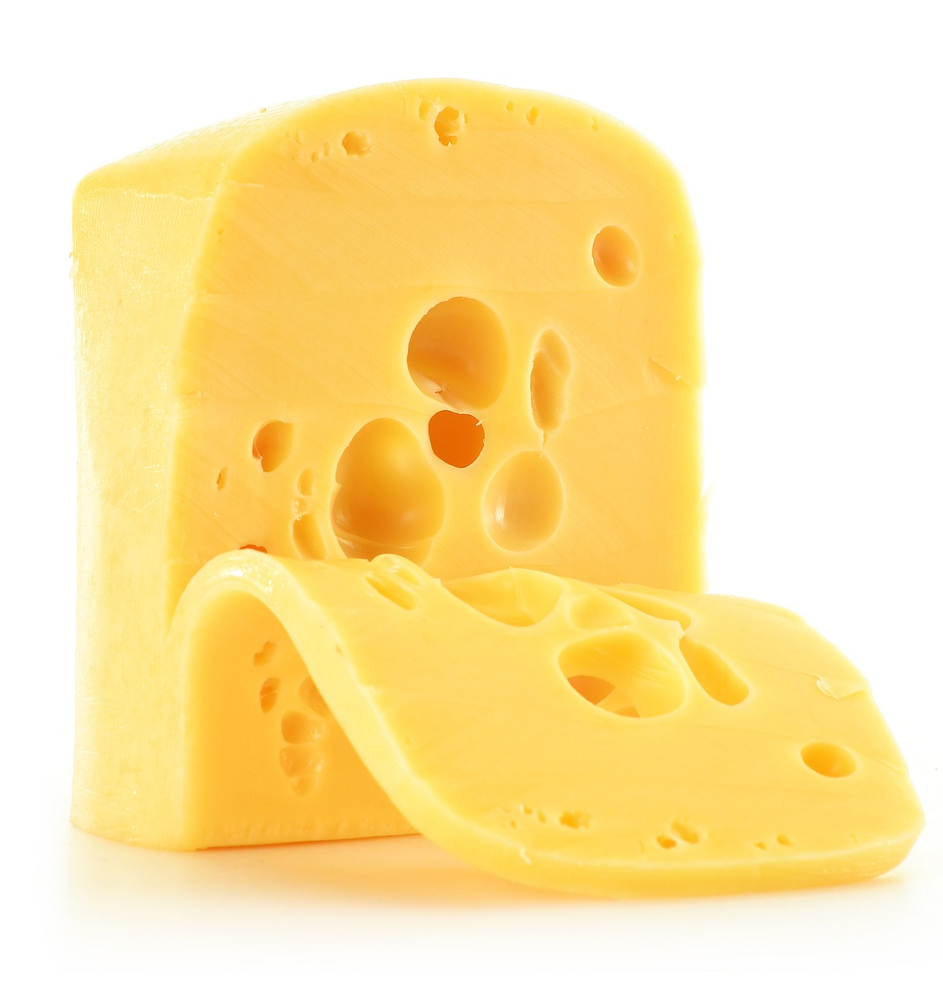

Cream

Cream is the rich, fatty part of milk that rises to the top if left to sit. It is smooth and thick, often used in cooking and baking to add richness. Cream is commonly used to make whipped cream, sauces, or desserts like custards and puddings. While cream is delicious, it contains a lot of fat and calories. For a healthier option, using lighter versions like half-and-half or consuming cream occasionally is a better choice.
Cheese

Cheese is made by curdling milk and separating the solid curds from the liquid whey. There are many types of cheese, such as cheddar, mozzarella, and brie, each with its own unique taste and texture. Cheese is a great source of calcium and protein but can be high in salt and fat. Eating cheese in moderation is recommended to enjoy its benefits without health risks.
Milk

Milk is a staple dairy product obtained from cows, goats, or other animals. It is a rich source of calcium, vitamin D, and protein, which are essential for strong bones and teeth. Milk can be consumed plain or used to make various dishes like soups, smoothies, or cereals. For those who are lactose intolerant, lactose-free milk or plant-based alternatives like almond milk are good substitutes.
Yogurt
Yogurt is made by fermenting milk with live bacteria. It has a creamy texture and a tangy flavor. Yogurt is available in many varieties, including plain, flavored, and Greek yogurt, which is thicker and higher in protein. It contains probiotics that promote gut health and improve digestion. Choosing plain or low-sugar yogurt is a healthier option for regular consumption.
Butter

Butter is made by churning cream until it thickens into a solid form. It has a rich, creamy flavor and is used as a spread, in baking, or for cooking. Butter contains vitamins A and D, but it is high in saturated fat. To maintain a balanced diet, it’s best to use butter sparingly or opt for healthier fats like olive oil./p>
Kefir

Kefir is a fermented milk drink with a tangy, slightly fizzy taste. It is made by adding kefir grains, which are a mix of bacteria and yeast, to milk. Kefir is rich in probiotics, which help maintain a healthy gut and boost the immune system. It can be enjoyed plain, mixed into smoothies, or used as a base for salad dressings. To get the most health benefits, unsweetened kefir is the best choice.